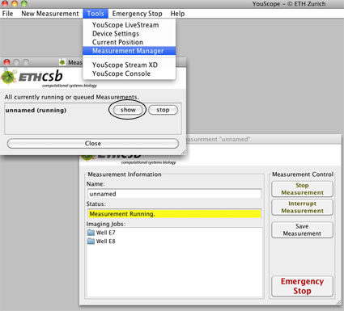
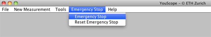
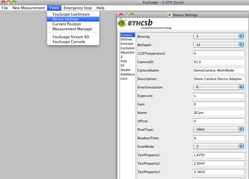

Additional Tools
Open a new Measurement Window
If by accident the measurement window was closed, there is a second possibility to open the Measurement window with Tools->Measurement Manager in the toolbar of the YouScope window. Or if a microscopist wants to control his running measurement from any computer in the network, he has to open the measurement window after he started YouScope on the remotely connected computer. A new window called Measurement Manager appears, where the running or queued jobs are displayed. Clicking on the Show opens the Measurement window again.

Emergency Stop
| We highly recommend to have always a hardware emergency stop button in your proximity during a measurement ( e.g. the power supply button of the microscope) instead of relying on this feature in YouScope. It could be that in such a case the computer is crashed and then its useless to use this option in the program! After usage of the Emergency Stop the system has to be reseted by Tools->Reset Emergency.
The owner of this site shall not be responsible does not guaranty that the Emergency Stop will stop the measurement in case of emergency. |

Display the Position of the Position of the Stage
There is a possibility to display the position of the beam on the sample. This is important, if an old position has to be found again, or to check, if in the configuration the right coordinate system is chosen. The position cannot be changed in this option, just displayed. The position can be changed manually. The option is under Tools->Current Position.

Device Settings
The device settings can be recalled with Tools->Device Settings for controlling and -if necessary - manipulating the current settings of the devices of a microscope. Common settings should however be rather made in the System.Startup configuration group in the *.cfg file.

{kind=link}
{kind=link}
{kind=link}
{kind=link}